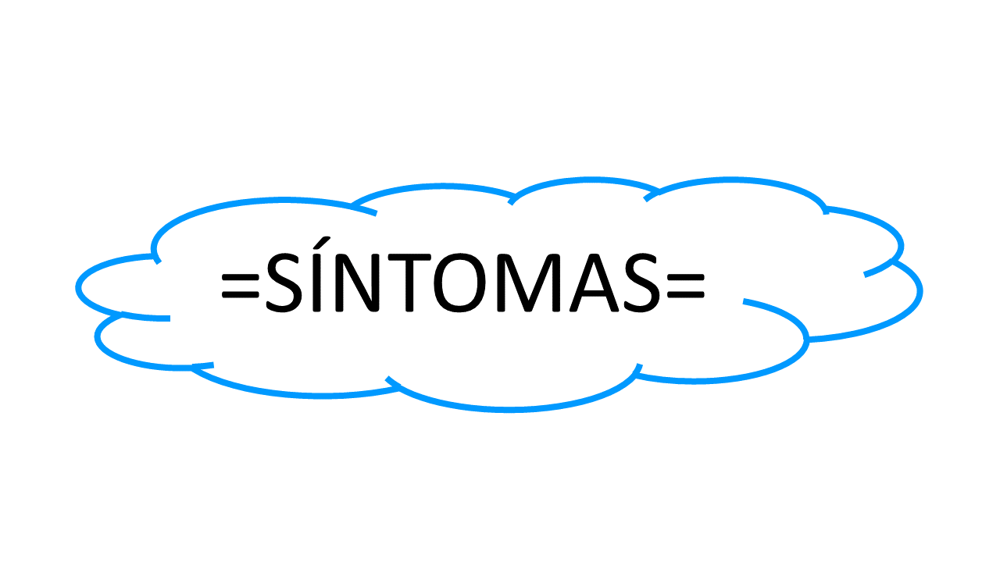
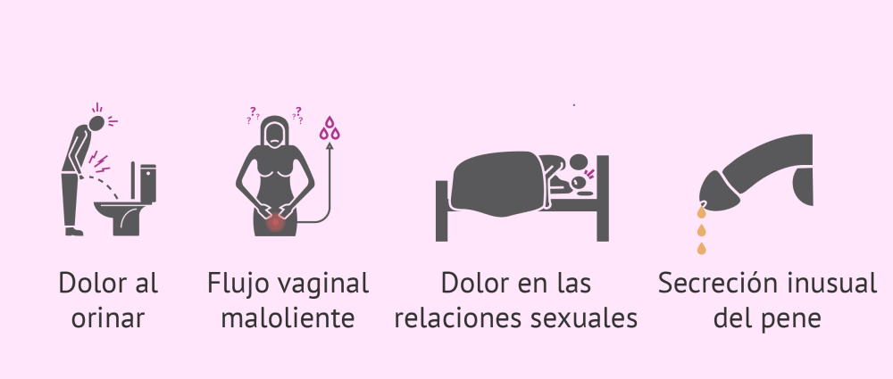
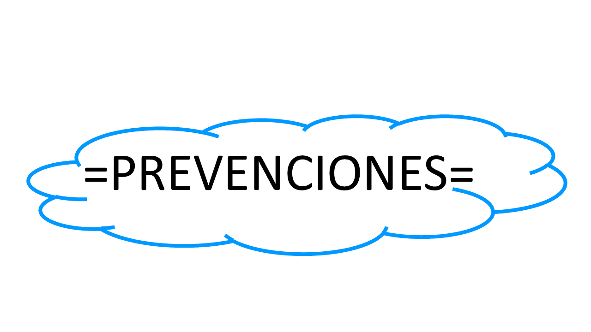

|
Las enfermedades de transmicion |

|
 |

|
Enfermedades |
Mujeres |
Hombres |
Cantidad |
|---|---|---|---|
| Sifilis | 1010 | 1655 | 2665 |
| Gonorrea | 22 | 65 | 87 |
| VIH/SIDA | 42 | 391 | 433 |
| Candidiasis | 949 | 203 | 1052 |
| CondilomasHPV | 239 | 893 | 1132 |
| Clamidia | 241 | 1045 | 1286 |
| Herpes genital | 849 | 239 | 1088 |
| Triconomiasis | 2714 | 102 | 2816 |
| Total | 4827 | 6066 | 10659 |